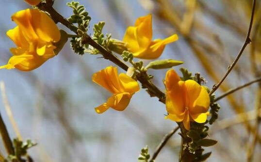
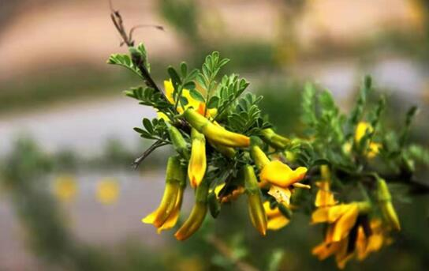
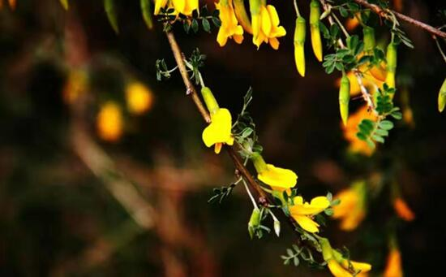

青海最美山花——柠条花
柠条的全名叫柠条锦鸡儿（Caragana korshinskii Kom）是豆科锦鸡儿属植物，蔷薇目，属豆科。其别称又叫白柠条、毛条等。柠条主要分布在中国的宁夏、内蒙古、山西和陕西等地区，而那些天然的柠条主要分布在草原地带。柠条的生命力十分顽强，柠条花是黄土高原上最美的一道风景线，也是草原上点缀在无垠草地上的小黄花。不过，柠条分布最多地地带还是在山西和陕西省较多。
众所周知，柠条是内蒙古中西部地区生态建设的主要造林树种，其以适应性广，抗风沙、高温、严寒、耐干旱、瘠薄，固沙保土、保水保肥，生产优质饲料和造林技术简单等优良特性，深受群众喜爱。甘肃是一个地理环境较为严峻的地方，主要原因是因为甘肃的地形十分复杂，山地、高原、沙漠以及隔壁交所分布着。
柠条于20世纪50年代引进甘肃，现已大面积种植。柠条花在开花的时候很美，目前已经成为了绿化荒山的首选植物之一。虽然说柠条不能和那些可以存活成百上千年的植物相比，但是柠条也可以存活几十年，这就意味着一次的播种可以维系当地几十年的绿化。柠条的花和果子均可以入药，并且具有很好药用功效。《沙漠地区药用植物》：“味甘，性温”、“滋阴养血，主治高血压，头晕”。

柠条的家安在了大西北，把它的一生奉献给了大西北，虽然开花的样子很美，但是它们的使命不是为了美，而是去完成更有意义的事——俄日大西北画上绚丽的色彩。
柠条小民谣
民谣是世界各地都有的一种演唱题材，它主要就是民间流行的，可以反映当地人文特色的一种歌曲。在中国民间有各种各样的民间故事、民间歌谣，这些都鲜明、精准地表现了当地的人文风貌。在广泛种植柠条的大西北地区， 柠条与当地的居民已经有了深切的感情，当地的居民把柠条就当做是邻居一样，它们为大西北地区带来了希望也为当地的人带来了无限生机。

因此，当地就流传着这样一首民谣：“柠条是个宝，既是林又是草，防风固沙保耕地，放牧烧柴做肥料，还是牲口救命草。”短短的几个字既表达出当地人对柠条的喜爱，又把柠条的功效简洁明了地概括出来，让不了解柠条的人，一下子就有了深刻且直观的印象。
柠条花的花语
柠条花的花语几乎完全是由其坚韧不拔的“花性”所决定的。柠条可以在戈壁滩、沙漠以及黄土山坡这样严峻的地方生长，这就注定了柠条花生命力的顽强。同时它们也有自己柔软的一面，就是它们开的是小黄花，单独的看是那么的没有气势，但是连成一片的景观却那么壮阔恢弘。
首先，柠条花是希望的象征。如果在漫无边际的沙漠中看到一点绿，那么这点绿就是希望；如果在干旱的荒漠之中看到一泉水，那么这泉水也是希望之水。如今柠条花已经在黄土高坡扎下了根，那一片一片的柠条花，不正是希望之花吗？
极度不适合植物生长的地方，也有花卉可以存活，当地的老百姓更应该相信，不久的将来，黄土高坡上也可以呈现出一派姹紫嫣红的景象。其次，柠条花是坚强的象征。柠条对环境有着极强的适应能力，能够在各种恶劣的环境中茁壮成长，即便是后来引进到一些环境恶劣的地区也仍然可以存活下来，并且在那片土地之上深深的扎下根。
柠条花的这种精神也代表了具有生活中那类有勇气面对生活中的挫折与困难的人，因此荆条花还具有浓厚的人文寓意。再次，柠条花是柔韧的象征。花朵一向是给人以柔软之感，我们常常会听到说某个女子像花一样美，凡是花就是柔软的，但柠条花却是既柔软又有韧性，因为它不是生活在温室之中，而是在风大沙大的隔壁、荒漠、黄土丘陵之地。

最后，柠条花是奉献的象征。柠条花开的时间是在五月份和六月份，因此也只有在这两个月份才可以进行花的采集工作。关于柠条花的采集工作一般都是在春末、夏初开花时采收，之后选择使用新鲜的或者是晒干之后再用。柠条花的花开时间虽然很短，但是柠条花的花是具有药用功效的，只要做好采摘工作，是完全够我们使用的。所以说柠条花是具有奉献精神的，即所谓：花开二月，用一年。柠条的奉献精神不仅在于它可以保持水土以及固沙造林，还在于其花和果子可以入药。
柠条花——“白草塬”的logo
白草塬是甘肃白银会宁的一个公众号。现在是一个公众号盛行的时代，各种读书公众号、母婴公众号、甚至是官媒也有公众号。在为公众号设计logo的时候，既要简单，又要突出这个公众号的特色，最好还能展示其精神。
在白草塬最常见到的就是柠条花，在那种地理环境恶劣的地方，美丽娇贵的花无法生存下去，只有柠条花才可以适应那里的自然条件。它们的生存能力强，生命力旺盛，而且还可以当做是动物的饲料。
柠条花在白草塬下属的北刘村、景庄村、西坡村、官家塬等地都可以看到有很多柠条，白草塬的大地上处处都是柠条花。考虑到“红柳精神”是西北人特有的人文精神，因此就将柠条花视作为白草塬的精神之花，象征着白草塬的人们坚强、坚韧的优良品质。所以说，再也没有比柠条花更适合白草塬的logo了。
其实柠条花的花期是十分短暂的，只有五个月，不过柠条花也是一位中药可以入药服用，具有养阴、平肝之功效，常用于治疗头晕、高血压等症状。即便柠条花的花期过了，我们仍旧可以使用之前已经采摘好的柠条花。柠条花做到了：在有限的花期，奉献无限的可能，这是无私的精神。
 上一篇
上一篇